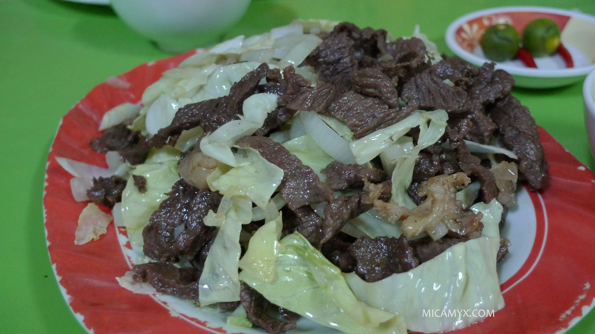

|  |
DescriptionPigar pigar, is a very popular street food in Dagupan, Philippines it’s so popular it has its own festival. This dish is a very simple dish that is made out really thin slices of beef and liver quickly deep-fried and served with fresh slices of onions. Though the popular meat used nowadays is beef the original version uses carabeef a meat that comes from carabao, also called water buffalo. Ingredients500g beef, sliced thinly Procedure1. In a bowl, marinate beef slices and liver for at least an hour in soy sauce, salt and black pepper. PriceP60 / serving |
||
| Previous | Next |